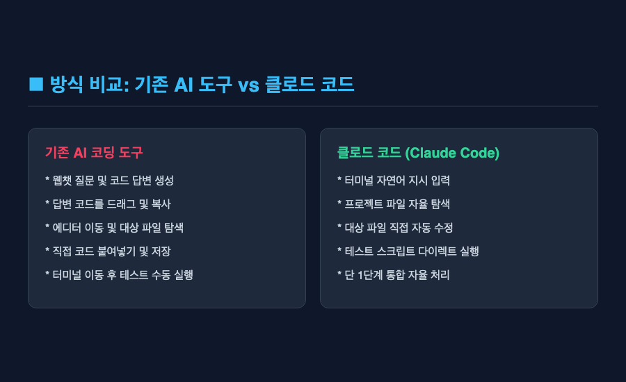
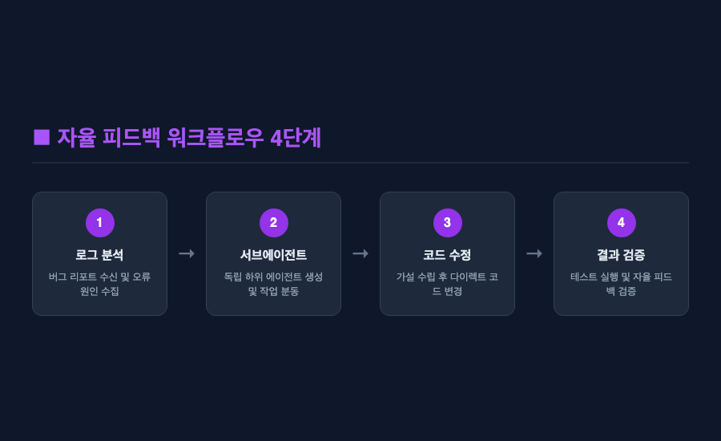
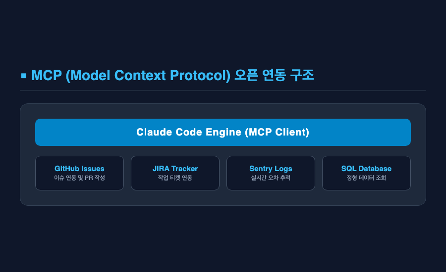
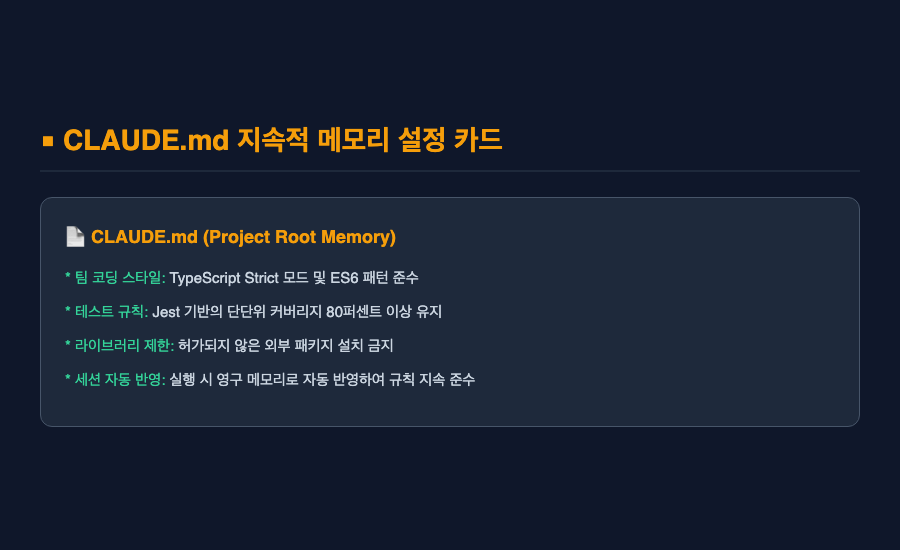

결론부터 말씀드리면 — 터미널에서 동작하는 클로드 코드는 기존의 단순 코드 추천 AI와는 차원이 다른 생산성을 보여줍니다. 터미널 환경과 깊게 통합되어 파일 수정부터 명령 실행까지 직접 처리하기 때문인데요.
솔직히 말씀드리면, 저도 처음 클로드 코드가 출시되었다는 소식을 들었을 때는 그리 감흥이 크지 않았습니다. 이미 IDE 플러그인이나 웹챗 형태의 AI 도구가 넘쳐나는 상황에서, 굳이 검은 터미널 창 안으로 들어간 AI 코딩 에이전트가 얼마나 다를까 싶었거든요. 기존 도구들도 충분히 훌륭하다는 통념이 있었니까요. 그런데 막상 실제 프로젝트에 적용해 보면서 제 생각이 완전히 틀렸음을 깨달았습니다.
웹 리서치 분석 결과와 제가 직접 경험하며 감탄했던 클로드 코드의 핵심 기능 5가지, 그리고 실무 사용 시 솔직하게 느꼈던 아쉬운 점까지 함께 정리해 보았습니다.
■ 첫 번째, 터미널 환경과의 완전한 통합과 다이렉트 파일 편집
기존 AI 도구를 쓸 때 가장 번거로웠던 점은 코드 복사 및 붙여넣기 작업이었습니다. 답변으로 나온 코드를 드래그해서 내 에디터 파일에 일일이 찾아 넣어야 했는데요.
클로드 코드는 터미널 창 안에서 프로젝트 구조를 직접 읽고, 수정이 필요한 파일을 스스로 찾아 즉시 코드를 변경해 줍니다. 개발자가 일일이 파일 경로를 복사하거나 에디터를 오갈 필요가 없는 것입니다. 심지어 빌드 명령어나 테스트 스크립트 실행까지 터미널에서 즉시 처리하고 그 결과를 스스로 확인합니다.

물론 직접 파일과 터미널 제어 권한을 가지다 보니, 매번 파일 수정이나 명령 실행 전에 승인 팝업이 뜨는 경우가 있는데요. 안전을 위한 조치이지만 작업 흐름이 가끔 끊기는 아쉬움은 남아있습니다.
■ 두 번째, 프로젝트 전체 맥락 파악과 깊이 있는 코드 검색
단일 파일만 바라보는 AI는 전체 시스템의 영향도를 파악하지 못합니다. A 파일을 수정했을 때 B 파일에서 어떤 오류가 터질지 알 수 없기 때문인데요.
클로드 코드는 프로젝트 전체의 디렉토리 구조와 모듈 간 의존성, 함수 호출 관계를 깊이 있게 이해합니다. "이 함수가 어디서 사용되고 있지?"라고 물으면, 프로젝트 전체를 탐색하고 연관된 파일들을 찾아내어 정확한 문맥을 바탕으로 답변을 제시합니다. 대규모 코드 리팩토링이나 영향도 분석을 진행할 때 마치 프로젝트를 오랫동안 다뤄온 동료 개발자의 도움을 받는 듯한 느낌을 받았습니다.
하지만 코드베이스의 규모가 너무 거대할 경우에는 맥락 분석에 다소 시간이 걸리거나 가끔 지연 현상이 발생하는 경우도 존재했습니다.
■ 세 번째, 자율적 에이전틱 워크플로우와 서브에이전트(Subagents) 활용
개발 과정에서 가장 많은 시간을 잡아먹는 것은 버그 수정과 원인 파악입니다. 클로드 코드는 이 과정을 자율적인 방식으로 접근하는데요.
버그 리포트나 에러 로그를 입력하면, 문제의 원인이 될 만한 코드를 찾아 가설을 세우고, 코드를 수정한 뒤, 다시 테스트를 돌려 성공 여부를 검증하는 일련의 워크플로우를 스스로 수행합니다. 특이할 점은 복잡한 과업을 수행할 때 대화 맥락을 보호하기 위해 독립된 서브에이전트(Subagents)를 생성하여 작업을 분동 처리한다는 것입니다. "오, 이걸 스스로 서브에이전트까지 띄워서 고친다고?"라는 탄성이 절로 나오는 순간이었습니다.

다만 복잡도가 아주 높은 문제에서는 AI가 가설을 잘못 세워 이상한 방향으로 코드를 여러 번 수정하려 시도하기도 합니다. 이럴 때는 개발자가 중간에 지시를 바로잡아 주는 적절한 개입이 필요합니다.
■ 네 번째, MCP(Model Context Protocol) 기반의 외부 시스템 확장성
개발은 코드 작성만으로 끝나지 않습니다. 데이터베이스를 조회하거나 이슈 트래커와 연동되는 등의 외부 작업이 필수적인데요.
클로드 코드는 Anthropic이 개발한 오픈소스 표준인 MCP(Model Context Protocol)를 지원합니다. 이를 통해 JIRA, GitHub Issues, Sentry 오차 로그 모니터링 시스템, SQL 데이터베이스 등 외부 도구와 정형화된 데이터 형태로 직결됩니다. 단순히 CLI 텍스트만 읽는 수준을 넘어 실제 소프트웨어 인프라 상태를 종합적으로 조회하며 문제를 해결할 수 있는 것입니다.

다만 Anthropic 전용 클로드 모델 라인업에만 의존하므로 타사 모델을 선택할 수 있는 유연성이 부족하다는 점은 이견의 여지 없이 아쉬운 대목입니다.
■ 다섯 번째, CLAUDE.md 기반의 지속적 메모리와 팀 가이드라인 적용
팀마다 혹은 프로젝트마다 지켜야 하는 코딩 컨벤션과 아키텍처 규칙이 다릅니다. 아무리 뛰어난 AI라도 우리 팀의 규칙을 모르면 소용이 없는데요.
클로드 코드는 프로젝트 루트 디렉토리에 위치한 CLAUDE.md 마크다운 파일을 세션 시작 시 자동으로 인식하여 읽어들입니다. 팀의 코딩 스타일, 특정 라이브러리 사용 금지 원칙, 빌드 및 테스팅 작성 지침을 명시해 두면, 매 대화마다 지침을 반복 입력할 필요 없이 해당 규칙을 철저히 준수합니다.

팀 차원에서 가이드라인을 잘 구축해 둔다면, 새로 합류한 개발자보다 더 빠르게 프로젝트 컨벤션에 적응한 코드를 생산해 낼 수 있는 것입니다. 다만 세션이 길어지거나 서브에이전트를 다중 실행할 경우 API 토큰 소비량이 급증할 수 있어 비용 관리에 주의가 필요합니다.
기존의 단순 코드 생성 방식이나 복사 붙여넣기 작업에 피로감을 느끼셨다면, 클로드 코드를 직접 프로젝트에 적용해 보시길 권해 드립니다. 처음에는 터미널 중심의 작업 방식이 다소 생소하게 느껴질 수 있는데요. 하지만 일단 그 통합 환경이 주는 편리함과 속도감에 적응하고 나면, 이전의 개발 방식으로 돌아가기는 꽤나 어려울 테니까요.